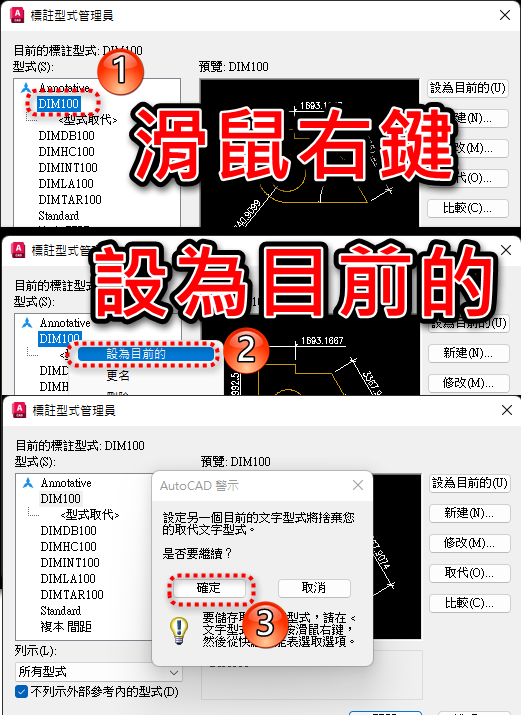

一般會員分享任務已結束
專屬B會員可以直接至專屬版區下載
[專屬分享]LSP下載標示聚合線長度：DimPLineLen指令
請記得訂閱 蘋果爸愛分享 YT頻道，魚幫水水幫魚😘
還沒訂閱下載的會員朋友，請記得訂閱完畢截圖po文回覆，我會再私訊你下載載點
👇基礎操作介紹👇
👇職場實務操作介紹(有更新程式)👇
補充：會員提問
瘋瘋的熊 寫到:請問這個Lisp使用完之後
要手動標註的時候
標註形式被改掉的情況要如何復原?
請輸入 DIMSTYLE指令: 開啟標註型式管理員，把你原來的標柱型式設為目前的即可。

註：建議也可先建立新標註型式，再來使用Lisp程式。
😙謝謝訂閱蘋果爸愛分享頻道+小鈴鐺
😙有會員反應問題，如果需要可以前往下載更新!!
😙下載有期限，請把握下載時間(如果失效再通知我)。
👇新加入要免費註冊 > 發表一篇報到文章 > 升等一般會員 > 即可回覆文章👇
＝＝＝＝＝＝＝＝＝＝＝＝＝＝＝＝＝＝＝＝＝
🙏如果可以懇請各位大大 順手按讚+分享影片
😘我會更有動力製作更多知識及技巧的影片
🍎【蘋果爸愛分享】教學課程🍎
AutoCAD | 自動載入Lsp(Fas)程式 | APPLOAD指令